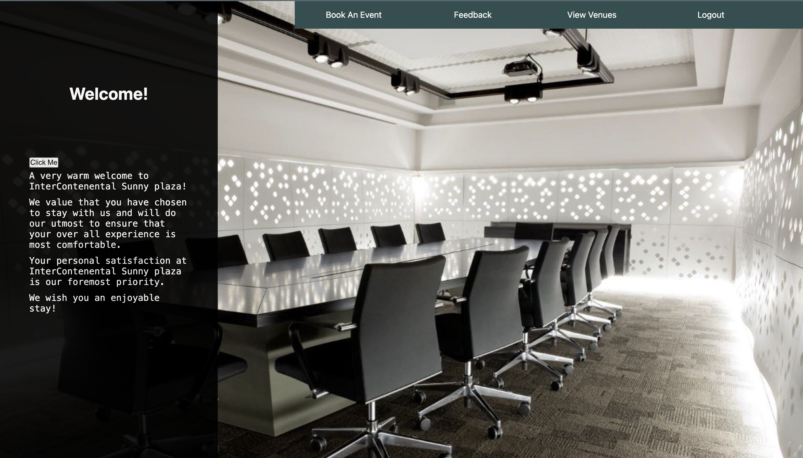
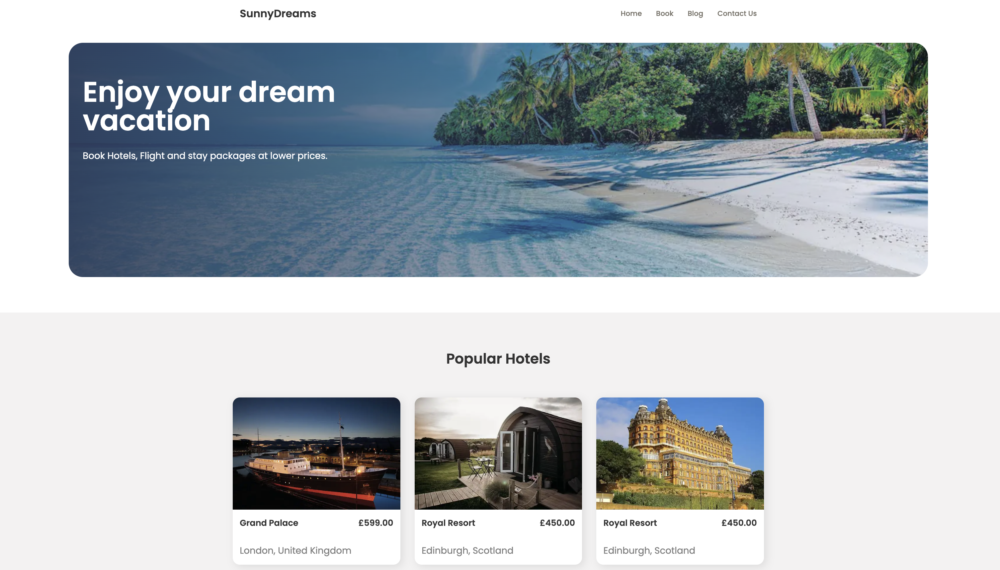
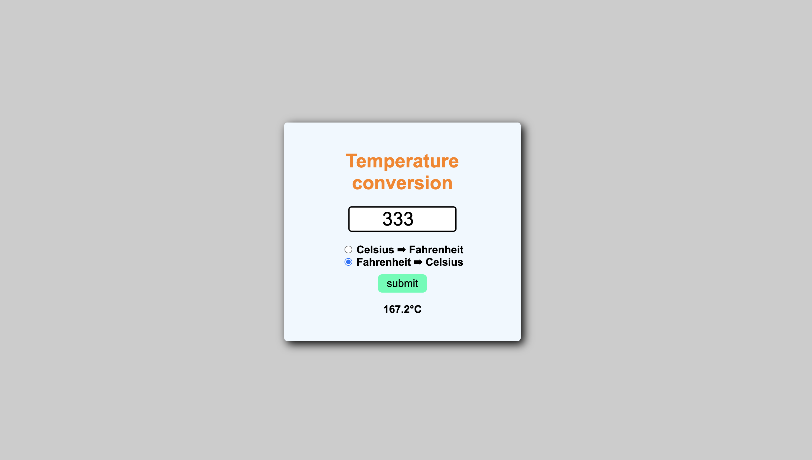

I’m a creative developer with a passion for building engaging and intuitive web experiences. I enjoy combining design and code to bring ideas to life, and I’m always exploring new technologies to grow and improve as a developer.
I’m a Computer Science graduate and aspiring software engineer passionate about building clean, user-focused web applications. I enjoy turning ideas into practical products through code, with a focus on full-stack development and intuitive user experiences.
I gained hands-on industry experience during my internship at Gwo Sevo, where I worked on USSD-based applications and strengthened my backend and problem-solving skills in a real-world environment.
Outside of work, I build personal projects, explore creative tech ideas, and enjoy videography. I’m currently seeking a junior software engineering role where I can grow, contribute, and continue improving as a developer.
Connect with me on LinkedIn.
My experience as a Junior Developer at Gwo Sevo allowed me to work on real-world USSD applications, focusing on building structured user flows that were simple, accessible, and reliable across mobile devices. I developed a strong understanding of how users interact with systems and how to design flows that guide them smoothly from input to completion.
I worked across both frontend and backend logic, handling user input validation, debugging application issues, and ensuring data was accurately captured and processed. This strengthened my practical skills in Laravel, MySQL, and API testing with Postman, while reinforcing the importance of writing clean, maintainable code.
Working in an Agile-style environment also improved my collaboration and communication skills, as I regularly worked with developers and stakeholders to solve problems, iterate on features, and deliver reliable solutions.
At Gwo Sevo, I worked as a Junior Developer, building USSD applications with the Rejoice framework and contributing to both frontend user flows and backend logic. My work involved debugging, API testing with Postman, and designing reliable data handling processes to improve system performance and user experience.
At Amazon, I worked in a fast-paced operational environment where collaboration, problem-solving, and efficiency were essential. I proactively resolved workflow issues and consistently contributed to achieving team productivity targets.
Currently at Turner Bianca, I support daily operations by coordinating with team members and using Oracle software to manage and track customer orders. This role has strengthened my attention to detail, communication, and ability to work effectively in structured, high-volume environments.
As a designer, I take a very pragmatic and data-informed approach to problem solving. I like to understand key business goals, metrics that the team cares about and ultimately thinking how they shape the roadmap and the reasons/purposes behind my initiatives. I know how to be scrappy and flexible but I also know when to button up and really think through the design solutions. My strengths lies on working across multiple projects, executing on high quality designs quickly and working collaboratively with cross-functional partners. I love growing the product, impacting the business and have passion for craft.

What started as a simple idea—making event planning easier—quickly turned into a deeper exploration of how people interact with digital systems. This event management platform was built to streamline the entire process, from organizing events to managing user interactions, all within a clean and intuitive interface. Along the way, I focused on creating a seamless experience that balances functionality with simplicity, ensuring users can navigate and engage without friction.
As the project evolved, it became more than just building features—it was about solving real problems, structuring data effectively, and thinking through user behavior at every step. Each decision shaped how the system responds, adapts, and performs behind the scenes. But this is only part of the story…
It began as a small front-end experiment—designing a clean travel landing page—but quickly grew into something more intentional. SunnyDreams became a way to explore how structure, layout, and dynamic content can come together to create a smooth and engaging browsing experience for users looking to plan their next trip.
Rather than just placing elements on a page, the focus shifted toward how each section communicates with the user. The navigation, featured hotel listings, and client feedback areas were all designed to guide attention naturally, while keeping the interface simple and visually balanced.
As the build progressed, it turned into an exercise in thinking beyond static design—introducing JavaScript to render content dynamically and organizing components in a way that allows the project to scale. Each decision wasn’t just about how it looks, but how it behaves and adapts. There’s more happening beneath the surface than first meets the eye…


What started as a mobile-based promotional concept for Nestlé IDEAL’s “Trip to Dubai” campaign quickly developed into a more meaningful exploration of how USSD technology can deliver large-scale, interactive brand experiences.
Rather than relying on traditional digital platforms, the focus shifted toward simplicity and reach. The interaction flow was designed so users could easily enter unique product codes, receive instant feedback, and stay engaged throughout the campaign—all from basic mobile devices. Every step was intentional, ensuring the experience felt seamless despite the technical constraints of USSD.
As the system developed, it became more than just a promotional tool—it was an exercise in building scalable, real-time interactions. Structuring the logic behind user sessions, responses, and reward flows required careful planning to keep everything responsive and reliable. Beneath the surface, it’s a system built to handle high engagement while delivering a smooth and intuitive user experience.
This temperature conversion application was designed to give users a fast and straightforward way to switch between Celsius and Fahrenheit within a clean, minimal interface. The focus went beyond basic functionality to how users interact with simple tools. Attention was given to creating clear inputs, responsive feedback, and an overall experience that feels intuitive and effortless to use.
During development, JavaScript played a key role in handling real-time calculations, validating user input, and updating the interface dynamically based on user selection. This helped reinforce practical understanding of how logic and user interaction work together in a web environment.
Over time, the project grew into more than just a conversion tool. It became an exercise in structuring simple workflows, improving UI clarity, and strengthening the relationship between HTML, CSS, and JavaScript in building small but effective applications.
